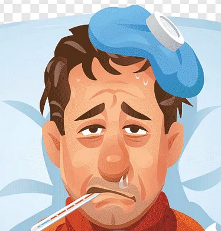

-
Телефон
+7 999 123 45 67
-
Почта
ivanov@mail.ru
ПАЦИЕНТ

Иван Петров
Место работы: сталевар завод № 24
Самодиагностика позволяет обнаружить заболевания на ранней стадии и избежать их развития. Самодиагностика - это удобно и быстро. Здесь вы сожете протестировать себя и, в случае необходимости, обратиться к врачу.